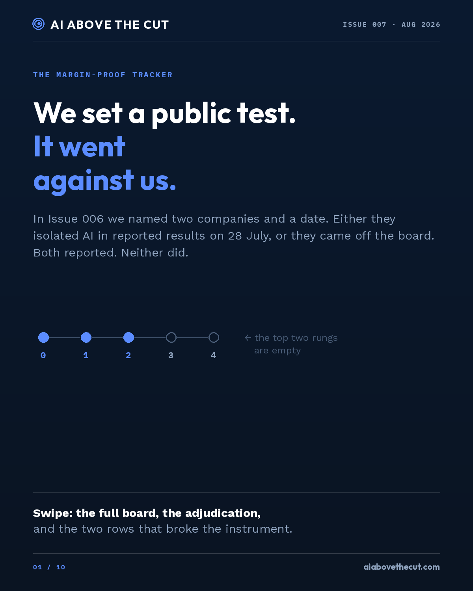
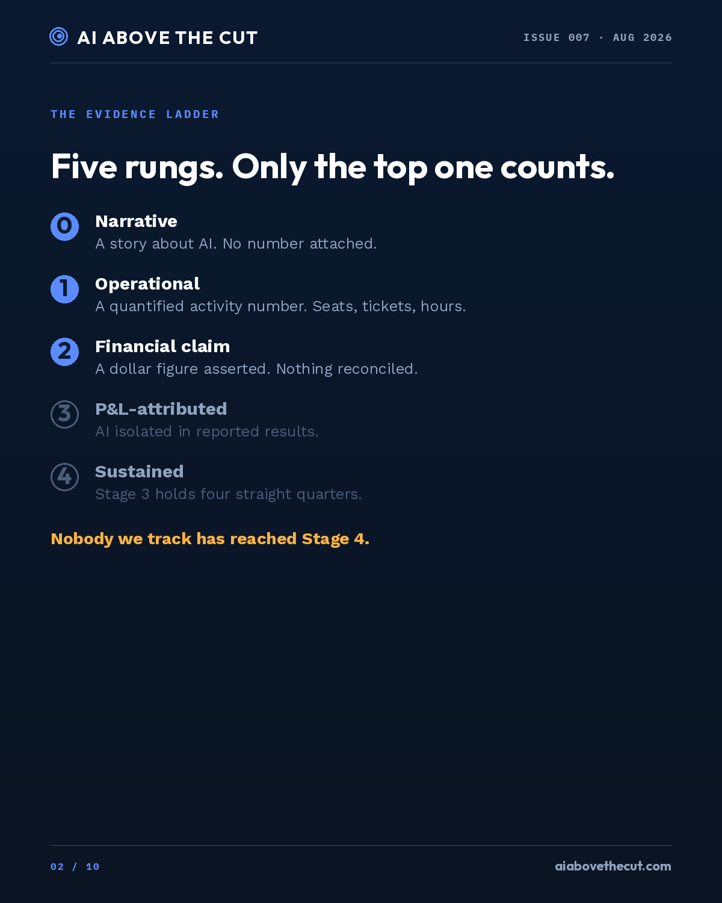
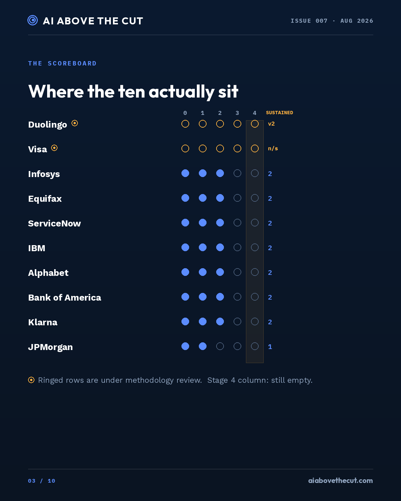
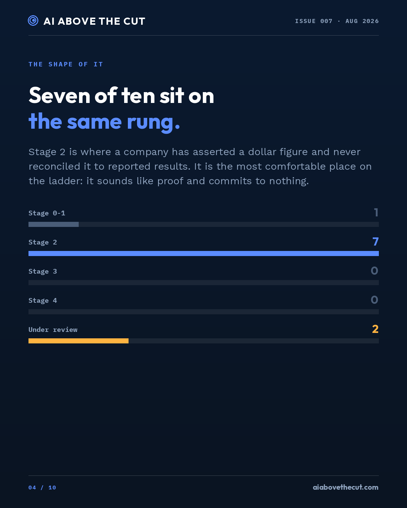
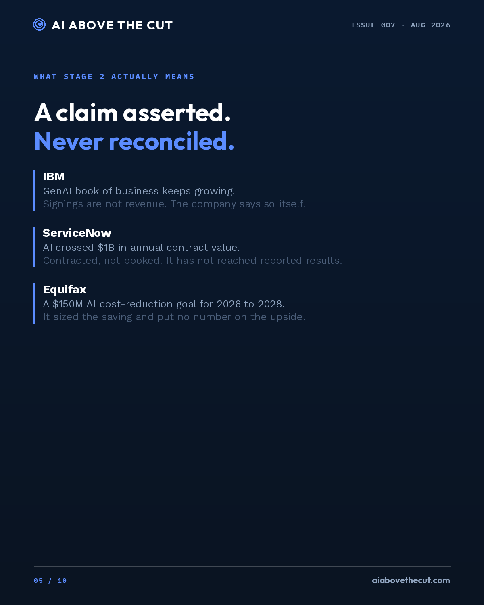
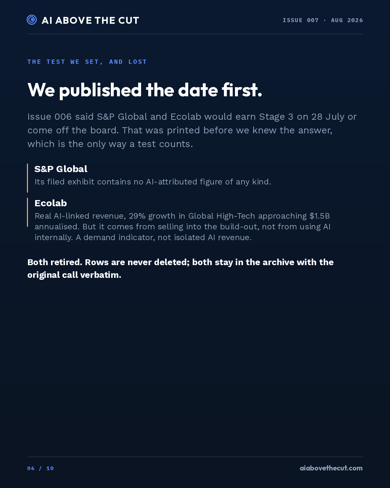
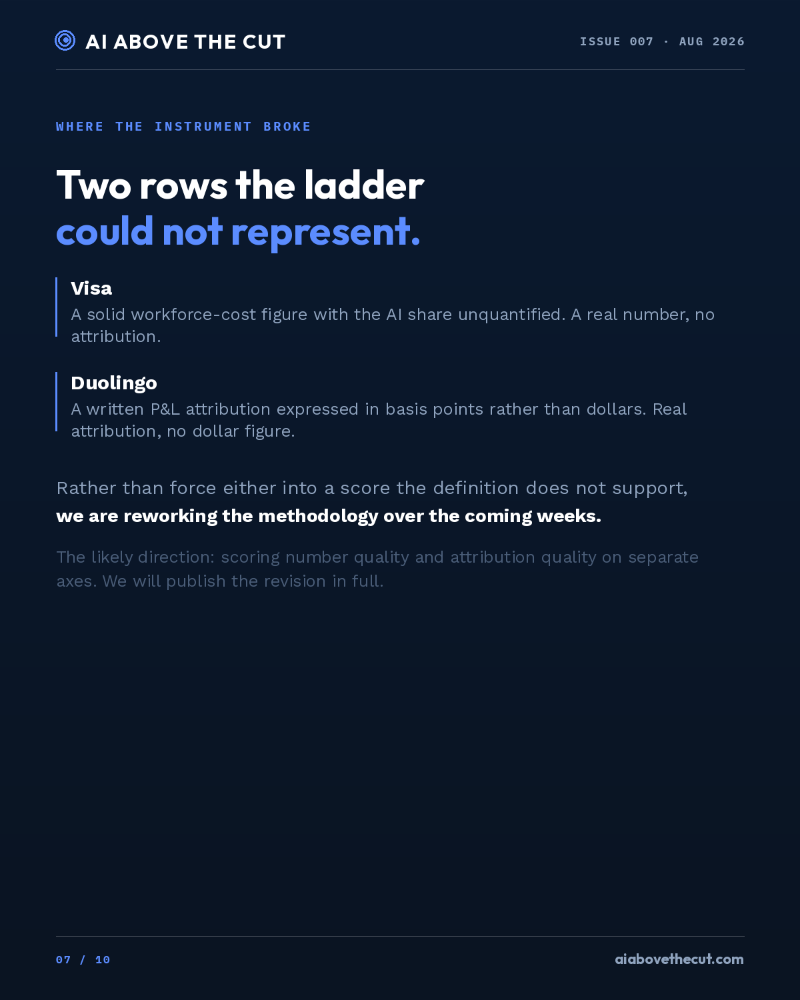
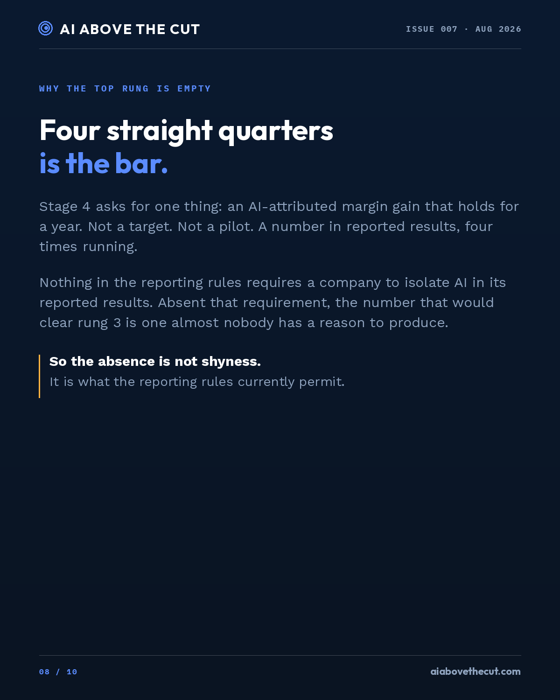
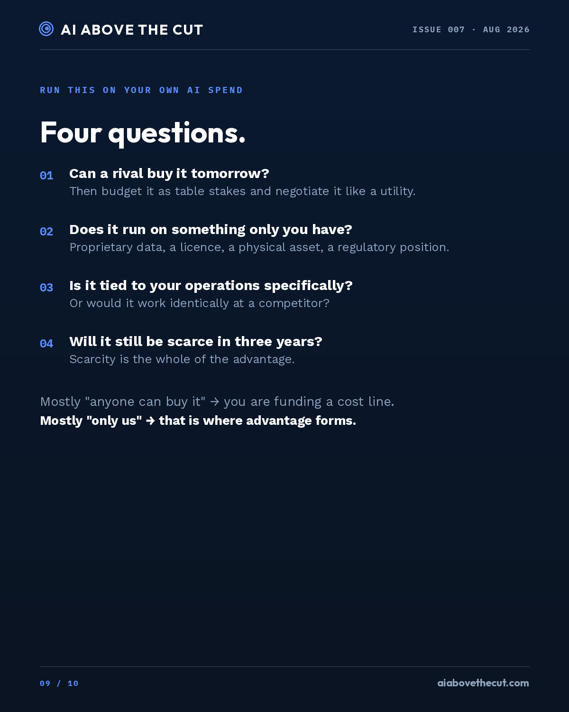
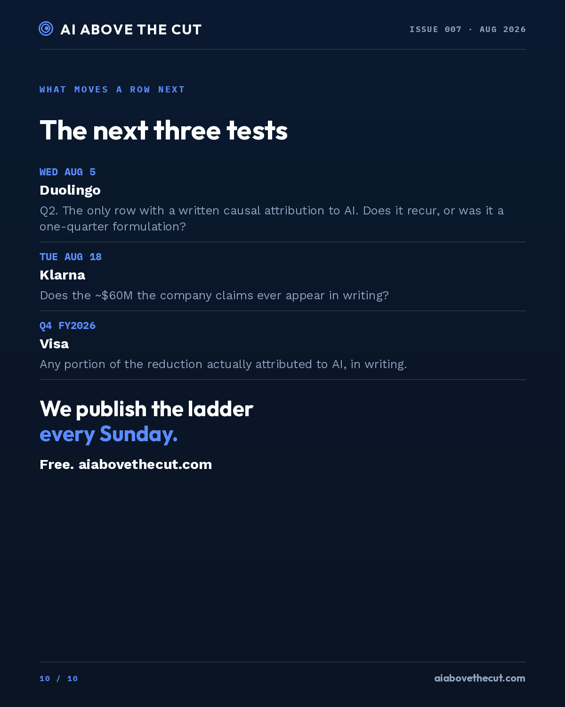

Margin-Proof Tracker carousel — 2026-08-02
2026-08-02_tracker_01.png

ALT: Cover slide. The Margin-Proof Tracker. Headline: we set a public test, it went against us. In Issue 006, two companies had to isolate AI in reported results on 28 July or come off the board. Both reported, neither did. A five-rung evidence ladder is shown with the top two rungs unfilled.2026-08-02_tracker_02.png

ALT: The evidence ladder, five rungs: 0 narrative, 1 operational, 2 financial claim, 3 P and L attributed, 4 sustained. Rungs 3 and 4 are shown unfilled. Note: Nobody we track has reached Stage 4.2026-08-02_tracker_03.png

ALT: Scoreboard. Ten companies plotted on the 0 to 4 ladder. Duolingo and Visa are marked as under methodology review rather than scored. Infosys 2, Equifax 2, ServiceNow 2, IBM 2, Alphabet 2, Bank of America 2, Klarna 2, JPMorgan 1. The Stage 4 column is highlighted and completely empty.2026-08-02_tracker_04.png

ALT: Seven of ten companies sit at Stage 2. Bar chart: Stage 0 to 1 has one company, Stage 2 has seven, Stage 3 has zero, Stage 4 has zero, and two rows are under methodology review.2026-08-02_tracker_05.png

ALT: What Stage 2 means: a claim asserted, never reconciled. IBM: GenAI book of business, but signings are not revenue. ServiceNow: AI crossed one billion dollars in annual contract value, but that is contracted, not booked. Equifax: a 150 million dollar AI cost-reduction goal, which sized the saving and put no number on the upside.2026-08-02_tracker_06.png

ALT: The test we set, and lost. Issue 006 said S&P Global and Ecolab would earn Stage 3 on 28 July or come off the board. S&P Global's filed exhibit contains no AI-attributed figure. Ecolab has real AI-linked revenue from selling into the build-out, not from using AI internally. Both retired, and both stay in the archive.2026-08-02_tracker_07.png

ALT: Where the instrument broke. Two rows the ladder could not represent. Visa has a solid workforce-cost figure with the AI share unquantified: a real number with no attribution. Duolingo has a written P and L attribution in basis points rather than dollars: real attribution with no dollar figure. Rather than force either into an unsupported score, the methodology is being reworked, likely scoring number quality and attribution quality on separate axes.2026-08-02_tracker_08.png

ALT: Why the top rung is empty. Stage 4 requires an AI-attributed margin gain that holds four straight quarters in reported results. Nothing in the reporting rules requires a company to isolate AI in its reported results, so the number that would clear rung 3 is one almost nobody has a reason to produce.2026-08-02_tracker_09.png

ALT: Four questions to run on your own AI spend. One: can a rival buy it tomorrow? Two: does it run on something only you have? Three: is it tied to your operations specifically? Four: will it still be scarce in three years? Mostly anyone-can-buy-it means you are funding a cost line; mostly only-us is where advantage forms.2026-08-02_tracker_10.png

ALT: What moves a row next. Wednesday August 5: Duolingo Q2, the only row with a written causal attribution to AI. Tuesday August 18: Klarna, does its claimed 60 million dollars ever appear in writing. Visa's Q4: any portion of the reduction attributed to AI in writing. The ladder publishes every Sunday, free, at aiabovethecut.com.